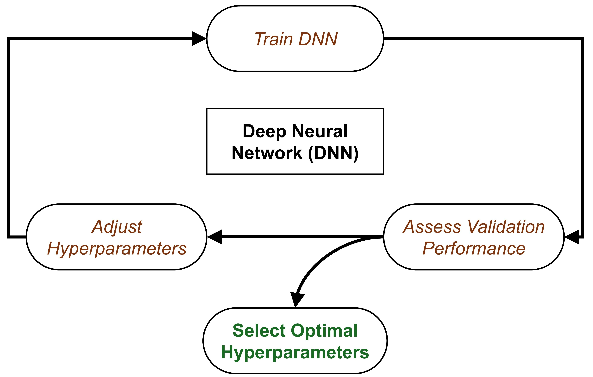

# efi_datamodule.py
import pytorch_lightning as pl
from torch.utils.data import DataLoader
from .efi_dataset import EfiDataset
class EfiDataModule(pl.LightningDataModule):
"""
A PyTorch Lightning DataModule for the EFI point cloud dataset.
Handles data preparation, setup, and creation of DataLoaders.
"""
def __init__(self, cfg, args):
super().__init__()
self.cfg = cfg # Full dataset config (e.g., root, csv_path)
self.args = args # Command line arguments (e.g., batch_size, num_point)
self.num_workers = 4 # Fixed worker count for robustness
def setup(self, stage=None):
common_params = dict(
root=self.cfg['root'],
csv_path=self.cfg['csv'],
label_col=self.cfg['label_col'],
task_type=self.cfg['task'],
num_points=self.args.num_point,
classes_list=self.cfg['classes'],
process_data=False, # rely on cache or on-the-fly loading
use_normals=self.cfg['use_normal'],
use_fps=self.cfg['use_fps']
)
if stage in (None, "fit"):
self.train_dataset = EfiDataset(split="train", **common_params)
self.val_dataset = EfiDataset(split="val", **common_params)
if stage in (None, "test", "predict"):
self.test_dataset = EfiDataset(split="test", **common_params)
def train_dataloader(self):
return DataLoader(
self.train_dataset,
batch_size=self.args.batch_size,
shuffle=True,
num_workers=self.num_workers,
drop_last=True,
pin_memory=True
)Training Deep Learning Models
Introduction
Deep Neural Networks (DNN), specifically those designed for 3D point clouds, are powerful tools for automation. This tutorial outlines how to use the PyTorch Lightning (PL) framework to train a specific and highly effective model—the Dynamic Graph CNN (DGCNN)—on your plot data.
Our goal is to automate complex analysis, such as:
Classification: Automatically determining the forest type (e.g., coniferous/deciduous/mixed) for a plot.
Regression: Estimating biomass or predicting tree attributes like total height or basal area.
Source code is available on Github
└── src
├── README.md
├── config.py
├── dataset
├── data_utils.py
├── efi_datamodule.py
└── efi_dataset.py
├── models
├── dgcnn.py
├── efi_modelmodule.py
├── heads.py
├── loss_utils.py
├── metrics.py
├── pointnet.py
├── pointnet2_msg.py
├── pointnet2_ssg.py
├── pointnet2_utils.py
├── pointnet_utils.py
└── pointnext.py
└── train_pl.pyHow DGCNN Works
While our framework supports multiple models (like PointNet, PointNet2, PointNeXt), we will focus on DGCNN (--model dgcnn) because of its superior ability to capture complex local geometry in point clouds—perfect for identifying fine details in forest structure.
Unlike standard PointNet looks at each point individually, DGCNN looks at the difference between a point and its neighbors (\(x_i - x_j\)). DGCNN is based on Spatial-based Graph convolution network, which formulate graph convolutions as aggregating feature information from neighbors.
This is like an ecologist looking not just at one tree’s height, but how much taller it is than its immediate neighbors—capturing the canopy texture.
For every point in the cloud:
Find Neighbors: It looks at the \(k\) closest neighboring points (such as \(x_{j_{i1}}\),…,\(x_{j_{ik}}\) are closet to \(x_i\)).
Build a Local Graph: It constructs a graph defining the relationship between the central point and its neighbors using edges \((i, j_{i1}) -> e_{ij_{i1}}\).
Dynamic Update: After each layer of processing (
EdgeConv), it re-evaluates the “neighborhood” in the feature space (hence Dynamic).


This allows the model to progressively learn more complex, abstract relationships in the data, ultimately leading to highly accurate classification or attribute prediction for the entire plot.
Deep Learning Pipeline

The Core Components of Pytorch Lightning:
LightningDataModulewraps the data phase. It takes in a customPyTorch DatasetandDataLoaderwhich enables Trainer to handle data during training. If needed,LightningDataModuleexposes thesetupandprepare_datafunctions in case you need additional customization.LightningModuleitself is a customtorch.nn.Modulethat is extended with dozens of additional functions likeon_fit_startandon_fit_end. These functions allow us better control of Trainer’s flows and enables custom behaviors by overriding these hooks.Trainerconfigures the training scope and manages the training loop withLightningModuleandLightningDataModule. The simplest Trainer configuration is accomplished by setting flags like devices, accelerator, and strategy and by passing in our choice of loggers, profilers, callbacks, and plugins.

The Data Foundation: The EFI Point Cloud Dataset
The first step in any deep learning project is getting your data from files on disk into tensors on the GPU. In this project, that job is handled by two Python scripts:
EfiDataset.py— reads and prepares individual plotsEfiDataModule.py— organizes those plots into training, validation, and test loaders
The EfiDataset (efi_dataset.py)
The EfiDataset class defines how to read your raw point cloud files (e.g., .npy format saved for each plot) and your labels file (e.g., labels.csv in our workshop) for the model.
What it does
- Reads raw files
Loads point clouds from .npy files
Reads labels from labels.csv (e.g.,
dom_sp_typefor classification ortotal_agb_zfor biomass regression)
- Samples points
Selects a fixed number of points (
num_point, default: 8192)This keeps memory usage manageable and ensures every batch has the same shape
- Computes optional features
Surface normals(local orientation of points)
- Caches processed data
- If
--process_datais enabled, it saves a processed version to disk (_process_and_cache()). Future runs load this cached data instead of reprocessing_load_cache(). This avoids resampling the raw data every time you train, drastically speeding up development. Else:on-the-fly.
Why 8192? Point clouds are massive. We downsample to a fixed number so we can process them in Batches. If we used the full points of a LiDAR plot, we’d run out of GPU memory instantly. 8192 is a typical ‘Sweet Spot’ for DNNs to retain structure information without crashing the hardware. We didn’t test all possible settings in our demo, try it out!
The EfiDataModule (efi_datamodule.py)
In the Pytorch Lightning framework, the EfiDataModule wraps the EfiDataset to handle the data workflow. It controls how plots move through the training system.
What it manages
- Which plots go into:
The setup() function creates three datasets: - train_dataset - val_dataset - test_dataset
Each one uses the same loading logic, but different rows from the label file ((e.g., using the split column in labels.csv)).
How big each batch is
How many background workers load data in parallel (make sure batches are efficiently provided to the GPU workers).
Important
Lightning call order in DataModule: prepare_data() if process data → setup() → DataLoder → GPU → Model
To summary: EfiDataset prepares one plot at a time (Reader & Preparer). EfiDataModule manages how plots are grouped and fed into training (Traffic Controller).
The Model: Dynamic Graph CNN (DGCNN)
Define the DGCNN Model (dgcnn.py)
This section covers the implementation of the DGCNN model, including :
- KNN-based local graph construction
Code
import torch
import torch.nn as nn
import torch.nn.functional as F
from models.heads import ClassificationHead, RegressionHead
def knn(x, k):
inner = -2*torch.matmul(x.transpose(2, 1), x)
xx = torch.sum(x**2, dim=1, keepdim=True)
pairwise_distance = -xx - inner - xx.transpose(2, 1)
idx = pairwise_distance.topk(k=k, dim=-1)[1] # (batch_size, num_points, k)
return idx
def get_graph_feature(x, k=20, idx=None):
batch_size = x.size(0)
num_points = x.size(2)
x = x.view(batch_size, -1, num_points)
if idx is None:
idx = knn(x, k=k) # (batch_size, num_points, k)
device = torch.device('cuda')
idx_base = torch.arange(0, batch_size, device=device).view(-1, 1, 1)*num_points
idx = idx + idx_base
idx = idx.view(-1)
_, num_dims, _ = x.size()
x = x.transpose(2, 1).contiguous() # (batch_size, num_points, num_dims) -> (batch_size*num_points, num_dims) # batch_size * num_points * k + range(0, batch_size*num_points)
feature = x.view(batch_size*num_points, -1)[idx, :]
feature = feature.view(batch_size, num_points, k, num_dims)
x = x.view(batch_size, num_points, 1, num_dims).repeat(1, 1, k, 1)
feature = torch.cat((feature-x, x), dim=3).permute(0, 3, 1, 2).contiguous()
return feature- Architecture construction (input features, layers, classification head, and regression head)
Code
import torch
import torch.nn as nn
import torch.nn.functional as F
from models.heads import ClassificationHead, RegressionHead
class get_model(nn.Module):
def __init__(self, cfg):
super(get_model, self).__init__()
self.k = cfg.get('k', 20)
emb_dims = cfg.get('emb_dims', 1024)
num_classes = cfg['num_classes']
self.bn1 = nn.BatchNorm2d(64)
self.bn2 = nn.BatchNorm2d(64)
self.bn3 = nn.BatchNorm2d(128)
self.bn4 = nn.BatchNorm2d(256)
self.bn5 = nn.BatchNorm1d(emb_dims)
self.conv1 = nn.Sequential(nn.Conv2d(6, 64, kernel_size=1, bias=False),
self.bn1,
nn.LeakyReLU(negative_slope=0.2))
self.conv2 = nn.Sequential(nn.Conv2d(64*2, 64, kernel_size=1, bias=False),
self.bn2,
nn.LeakyReLU(negative_slope=0.2))
self.conv3 = nn.Sequential(nn.Conv2d(64*2, 128, kernel_size=1, bias=False),
self.bn3,
nn.LeakyReLU(negative_slope=0.2))
self.conv4 = nn.Sequential(nn.Conv2d(128*2, 256, kernel_size=1, bias=False),
self.bn4,
nn.LeakyReLU(negative_slope=0.2))
self.conv5 = nn.Sequential(nn.Conv1d(512, emb_dims, kernel_size=1, bias=False),
self.bn5,
nn.LeakyReLU(negative_slope=0.2))
head_input_dim = emb_dims * 2 # 2048
if num_classes == 1:
self.mlp = RegressionHead(head_input_dim, num_classes)
else:
self.mlp = ClassificationHead(
head_input_dim,
num_classes,
drop1=cfg.get('drop1', 0.5),
drop2=cfg.get('drop2', 0.6)
)
def forward(self, x):
batch_size = x.size(0)
x = get_graph_feature(x, k=self.k)
x = self.conv1(x)
x1 = x.max(dim=-1, keepdim=False)[0]
x = get_graph_feature(x1, k=self.k)
x = self.conv2(x)
x2 = x.max(dim=-1, keepdim=False)[0]
x = get_graph_feature(x2, k=self.k)
x = self.conv3(x)
x3 = x.max(dim=-1, keepdim=False)[0]
x = get_graph_feature(x3, k=self.k)
x = self.conv4(x)
x4 = x.max(dim=-1, keepdim=False)[0]
x = torch.cat((x1, x2, x3, x4), dim=1)
x = self.conv5(x)
x1 = F.adaptive_max_pool1d(x, 1).view(batch_size, -1)
x2 = F.adaptive_avg_pool1d(x, 1).view(batch_size, -1)
x = torch.cat((x1, x2), 1)
x = self.mlp(x) # [B, num_outputs]
trans_feat = None # DGCNN does not produce a transform matrix
return x, trans_feat- classification/regression heads
class ClassificationHead(nn.Module):
def __init__(self, in_dim, num_outputs, drop1=0.5, drop2=0.5):
super().__init__()
self.net = nn.Sequential(
nn.Linear(in_dim, 512),
nn.BatchNorm1d(512),
nn.ReLU(),
nn.Dropout(drop1),
nn.Linear(512, 256),
nn.BatchNorm1d(256),
nn.ReLU(),
nn.Dropout(drop2),
nn.Linear(256, num_outputs),
)
def forward(self, x):
return F.log_softmax(self.net(x), dim=-1) # logits [B, num_classes]
class RegressionHead(nn.Module):
def __init__(self, input_dim, num_outputs):
super().__init__()
self.num_outputs = num_outputs
self.net = nn.Sequential(
nn.Linear(input_dim, 512),
nn.ReLU(),
nn.Linear(512, 64),
nn.ReLU(),
nn.Linear(64, self.num_outputs)
)
def forward(self, feat):
return self.net(feat)Loss Functions (loss_utils.py)
The loss function, or cost function, quantifies the difference between the model’s prediction and the true target value. It is the primary signal that guides the DNN during training.
Our module uses task-specific loss components (Classification or Regression loss):
def get_loss_function(task):
"""
Returns the core loss function (either nn.Module or functional).
"""
if task == 'classification':
# Using CrossEntropyLoss is simplest if input is raw logits.
return F.nll_loss
elif task == 'regression':
return F.smooth_l1_loss
else:
raise ValueError(f"Unknown task type: {task}")- For classification tasks:
F.nll_loss(Pytorch Implementation ).
This function is typically used when the model outputs log-probabilities (often obtained by applying a log-softmax activation to the raw logits). It penalizes the model when it assigns a low probability to the correct class:
\[ L_{\text{NLL}}(y, \hat{y}) = - \hat{y}_c \]
where \(y\) is the true class index, \(\hat{y}\) is the vector of log-probabilities output by the model (e.g., via F.log_softmax), and \(\hat{y}_c\) is the log-probability corresponding to the true class \(c\).
- For regression tasks:
F.smooth_l1_loss(Pytorch Implementation).
This function is a robust alternative to Mean Squared Error (L2) and Mean Absolute Error (L1). It behaves like L2 loss for small errors (which gives a smoother gradient for optimization) and like L1 loss for large errors (which makes it less sensitive to outliers).
\[ \ell(x, y) = L = \{l_1, ..., l_N\}^T \] \[ l_n = \begin{cases} 0.5 (x_n - y_n)^2 / beta, & \text{if } |x_n - y_n| < beta \\ |x_n - y_n| - 0.5 * beta, & \text{otherwise } \end{cases} \]
The Model Wrapper: EfiModelModule (efi_modelmodule.py)
The EfiModelModule is a custom wrapper built using PyTorch Lightning (specifically inheriting from pl.LightningModule). Its primary job is to act as the “Brain” of your deep learning system—organizing the model architecture, the training logic, the optimization, and the evaluation metrics into a single, clean structure.
The EfiModelModule connects four things into one clean interface:
The neural network (DGCNN)
The loss function
The optimizer
The evaluation metrics
Instead of writing long training loops, you describe what happens to one batch, and Lightning handles the rest.
Core components of the wrapper
The EfiModelModule typically organizes code into four main functional blocks:
- Initialization (
__init__)
This is where the model is born.
- Model Setup: It usually initializes a backbone (like
DGCNN), a task-specific head (like a classification layer). - Hyperparameters: Load configs, and it uses self.save_hyperparameters() to automatically save arguments like learning rate or model version into checkpoints for easy reproducibility.
- Initialize evaluation metrics
class EfiModelModule(pl.LightningModule):
def __init__(self, cfg, args):
super().__init__()
# Store hyperparameters for W&B/checkpointing
self.save_hyperparameters(cfg, args)
self.cfg = cfg
self.args = args
self.task = cfg['task']
# 1. Load Model Backbone
model_module = importlib.import_module(f"models.{cfg['model_name']}")
self.model = model_module.get_model(cfg)
# 2. Setup Metric Calculators (one for validation, one for testing)
self.val_metrics = MetricsCalculator(self.task, cfg['num_classes'])
self.test_metrics = MetricsCalculator(self.task, cfg['num_classes'])- The forward pass (
forward):
Defines how data flows through the model during inference. You call it when you want to get an output from an input: \(y_\hat = model(x)\)
def forward(self, points):
"""Standard model forward pass."""
return self.model(points)- The logic hooks
In PyTorch Lightning, the “loops” are broken down into specific hooks: training_step, validation_step, test_step, predict_step: what happens during one “step” of training or evaluation or testing .
_shared_step: Shared logic for training, validation, and test step
def _shared_step(self, batch):
"""Shared logic for training, validation, and test step."""
points, target, _ = batch # _ is plot_id, doesn't need in the these stpes
# Transpose [B, N, C] -> [B, C, N] and enforce float32
points = points.transpose(2, 1).float()
# 1. Forward Pass
pred, trans_feat = self(points)
# 2. Calculate Loss
loss = calculate_total_loss(
pred,
target,
trans_feat,
task=self.task
)
return loss, pred, targettraining_step: Calculate the training loss.
# --- Training ---
def training_step(self, batch, batch_idx):
loss, _, _ = self._shared_step(batch)
# Log basic training loss and learning rate for W&B
self.log('train/loss', loss, on_step=False, on_epoch=True, prog_bar=True)
self.log('train/lr', self.optimizers().param_groups[0]['lr'], on_step=True, on_epoch=False)
return lossWhat happens: This is the heart of the training loop.
Lightninghandles the boilerplate (forward pass, loss calculation, backward propagation, and optimizer updates) automatically based on what you return here. Instead of writing a massiveforloop, you just tellLightning: “Here is how you handle one batch.”
validation_step: Monitor model performance on unseen data during training.
Code
# --- Validation ---
def validation_step(self, batch, batch_idx):
loss, pred, target = self._shared_step(batch)
# 1. Log validation loss (PL automatically averages this over the epoch)
self.log('val/loss', loss, on_step=False, on_epoch=True, prog_bar=True)
# 2. Update the full MetricsCalculator for end-of-epoch aggregation
self.val_metrics.update(pred, target, 0.0)
return lossUsually triggered at the end of every training epoch. It helps track if the model is overfitting. Unlike the training step, it does not update model weights.
test_step: Provide a final, unbiased evaluation after training is complete.
Code
# --- Test Step ---
def test_step(self, batch, batch_idx):
"""
Dedicated step for final, unbiased evaluation on the test set.
Runs when trainer.test() is called.
"""
loss, pred, target = self._shared_step(batch)
# 1. Log test loss
self.log('test/loss', loss, on_step=False, on_epoch=True)
# 2. Update the full MetricsCalculator for end-of-epoch aggregation
self.test_metrics.update(pred, target, 0.0)
return lossThis is only called when you explicitly run
trainer.test(). It uses the “best” version of the model saved during training to see how it performs on a strictly held-out dataset.
prediction_stepis used for generating raw output/predictions on unseen data, it does not calculating loss and metrices:
Code
# --- Prediction / Inference ---
def predict_step(self, batch, batch_idx, dataloader_idx=0):
"""
Used for generating raw output/predictions on unseen data.
Does not calculate loss or metrics.
Runs when trainer.predict() is called.
"""
points, target, pid = batch
# Transpose [B, N, C] -> [B, C, N] and enforce float32
points = points.transpose(2, 1).float()
# 1. Forward Pass
# Assuming self(points) returns (pred, trans_feat), we only return the prediction (pred)
pred, _ = self(points)
if self.task == 'classification':
pred = torch.argmax(pred, dim=1)
# Return only the raw prediction tensor for the user
return {
"plot_id": pid,
"pred": pred.detach().cpu(),
"gt": target.detach().cpu()
}- Optimizer and scheduler:
configure_optimizers:
This tells the trainer which algorithm to use (e.g., Adam, SGD) to adjust the model’s weights to continuously minimize this loss value and how the learning rate should change over time (Schedulers. e.g., StepLR).
Code
# --- Optimizer Configuration ---
def configure_optimizers(self):
"""Defines the optimizer and scheduler as required by PL."""
optimizer = torch.optim.Adam(
self.parameters(),
lr=self.args.learning_rate,
betas=(0.9, 0.999),
eps=1e-08,
weight_decay=self.args.decay_rate
)
scheduler = torch.optim.lr_scheduler.StepLR(optimizer, step_size=20, gamma=0.7)
# PL requires the scheduler to be returned in a dictionary format
return {
'optimizer': optimizer,
'lr_scheduler': {
'scheduler': scheduler,
'interval': 'epoch', # Run scheduler step after each epoch
}
}Training Deep Learning Models in PyTorch Lightning
Configurations (config.py)
Detail where the cfg (e.g., config.py configuration file) and args (e.g., command line arguments) are loaded and parsed.
Code
DATASET_CONFIG = {
'petawawa_cls': {
'task': 'classification',
'root': './data/petawawa/plot_point_clouds',
'csv': './data/petawawa/labels.csv',
'classes': [
'conif',
'decid',
'mixed'
],
'label_col': 'dom_sp_type',
'num_classes': 3
},
'petawawa_reg': {
'task': 'regression',
'root': './data/petawawa/plot_point_clouds',
'csv': './data/petawawa/biomass_labels.csv',
'classes': None,
'label_col': 'total_agb_z',
'num_classes': 1
}
}The PyTorch Lightning Trainer (train_pl.py)
The Trainer class is responsible for the entire training lifecycle, handling distributed training, checkpointing, and calling the *step hooks of the EfiModelModule.
Code
# 3. Instantiate DataModule and Lightning Module
data_module = EfiDataModule(full_cfg, args)
model_module = EfiModelModule(full_cfg, args)
# 4. Define Callbacks
primary_metric = 'val/instance_acc' if task == 'classification' else 'val/r2_score'
checkpoint_callback = ModelCheckpoint(
dirpath=checkpoint_dir,
filename='{epoch:02d}-{val_loss:.4f}-{' + primary_metric.split('/')[-1] + ':.4f}',
monitor=primary_metric,
mode='max', # Maximize accuracy/R2
save_top_k=1,
verbose=True
)
lr_monitor = LearningRateMonitor(logging_interval='epoch')
# 5. Instantiate the Trainer
# PL handles device setup automatically based on arguments
trainer = pl.Trainer(
max_epochs=args.epoch,
accelerator='gpu' if torch.cuda.is_available() and not args.use_cpu else 'cpu',
devices=[int(g) for g in args.gpu.split(',')] if ',' in args.gpu else (1 if not args.use_cpu else 0),
logger=wandb_logger,
callbacks=[checkpoint_callback, lr_monitor],
deterministic=True, # For reproducibility
enable_progress_bar=True
)
# 6. Start Training
if mode == "training":
print('Starting PyTorch Lightning Training...')
trainer.fit(model_module, data_module)
# Test the best checkpoint after training
else:
print('\n--- Testing Model ---')
trainer.test(datamodule=data_module, ckpt_path='best')Summary: EFI Deep Learning Pipeline Logic
| Component | Responsibility | Key Hook |
|---|---|---|
| DataModule | Loads .npy files and applies spatial splits |
setup() |
| ModelModule | Defines DGCNN architecture and loss functions | forward() *_step() |
| Trainer | Manages loops, hardware, and W&B logging | fit() |
| Callbacks | Saves the best model weights automatically | on_validation_epoch_end() |
Logic flow
The
ModelModuledoesn’t work in isolation. It is the “Brain” that interacts with the “Body” (DataModule) and the “Coach” (Trainer).
When you pass the EfiModelModule and EfiDataModule to a Lightning Trainer (trainer.fit(model_module, data_module)), the following flow occurs:
- Setup Phase:
DataModuleprepares and loads the data (Train/Val splits)ModelModuleinitializes the architecture (e.g., DGCNN).
- The Training Loop (Repeat for \(N\) Epochs)
- Batch Start:
Trainerpulls a batch from theDataLoader. - Forward & Loss:
Trainercallstraining_step()in theModelModule. - Optimization: Lightning automatically runs
loss.backward()andoptimizer.step(). - Metrics: Metrics are logged via
self.log().
- Batch Start:
- The Validation Loop (Usually after each Epoch):
- Evaluation: Trainer switches to
eval()mode. - Metrics: Trainer calls
validation_step()to checkaccuracy/losson the validation set. - Checkpointing: If validation performance improves, the
Trainersaves the model weights.
- Evaluation: Trainer switches to
Monitoring with Weights & Biases (W&B)
Weights and Biases (wandb) is an online deep learning tool that can track experiments, perform hyperparameter tuning and visualize results. It is an effective method for refining and comparing models with different configurations.
The WandbLogger is integrated directly into the train_pl.py script. W&B is a powerful tool that automatically logs everything:
Metrics: All the calculated val/instance_acc, val/r2_score, train/loss, etc., are plotted in real-time.
# 2. Setup W&B Logger
wandb_logger = WandbLogger(
project=args.wandb_project,
name=Path('./log/').joinpath(task).joinpath(args.model).joinpath(args.log_dir or str(datetime.datetime.now().strftime('%Y-%m-%d_%H-%M'))),
config={**full_cfg, **vars(args)}, # Log all configs and arguments
)
# Use W&B's run directory for checkpoints
checkpoint_dir = Path('./log') / args.wandb_project / wandb_logger.experiment.name / 'checkpoints'
checkpoint_dir.mkdir(parents=True, exist_ok=True)W&B Dashboard
Load Interactive W&B Dashboard
What to Look for in the Dashboard
- The Loss Curve (Train vs. Val): If
train/losscontinues to drop butval/lossstarts rising, the model is overfitting (learning the plots by heart rather than the general forest structure). - Metrics, e.g., R² Score (biomass regression), overall accuracy (tree species classification)
Hyperparameter Tuning Weights and Biases

Compare results of different HPs using WANDB Sweep: DGCNN example
Load Interactive W&B Sweep
Predicting (predict.py)
Once your model has finished hyperparameter tuning and you have selected the best checkpoint, you can run predictions. The output is saved as a CSV containing the ground truth and the model’s estimate.
Code
# predict.py
# ... same as training for configs loading, datamodule, modelmodule, trainer initialize
# 4. Run prediction
print("Running prediction...")
outputs = trainer.predict(model, dataloaders=data_module)
# 5. Parse outputs → CSV
records = []
if task == "classification":
for o in outputs:
for pid, gt, pred in zip(
o["plot_id"],
o["gt"],
o["pred"]
):
records.append({
"plot_id": pid,
"dom_sp_type": int(gt.item()),
"pred_dom_sp_type": int(pred.item())
})
else: # regression
for o in outputs:
for pid, gt, pred in zip(
o["plot_id"],
o["gt"],
o["pred"]
):
records.append({
"plot_id": pid,
"total_agb_z": float(gt.item()),
"total_agb_z_pred": float(pred.item())
})
df = pd.DataFrame(records)
df.to_csv(os.path.join(os.path.dirname(args.ckpt_path), args.out_csv), index=False)
print(f"Predictions saved to: {os.path.join(os.path.dirname(args.ckpt_path), args.out_csv)}")Tree Species Classification
For classification, we compare the categorical index of the dominant forest type between the ground truth and the model predictions. Table 2 shows the results of a DGCNN model classifying forest plots into type 0, 1, or 2 (Coniferous, Deciduous, Mixed).
| plot_id | dom_sp_type (Actual) | pred_dom_sp_type (Predicted) |
|---|---|---|
| PRF009 | 1 | 1 |
| PRF076 | 0 | 0 |
| PRF011 | 0 | 0 |
| PRF122 | 2 | 2 |
| PRF179 | 1 | 1 |
Biomass Regression
For regression, we compare the standardized Above Ground Biomass (AGB) values. This enables the calculation of quantitative performance metrics such as RMSE and the coefficient of determination (\(R^2\)). Table 3 provides example predictions.
| plot_id | total_agb_z (Actual) | total_agb_z_pred (Predicted) |
|---|---|---|
| PRF009 | -0.03388112783432007 | -0.06726609170436859 |
| PRF076 | -0.342624306678772 | -0.3901059031486511 |
| PRF011 | -0.22952325642108917 | -0.29783695936203003 |
| PRF122 | 0.3514338731765747 | 0.34753304719924927 |
| PRF179 | 0.09915713965892792 | 1.4272195100784302 |
How to Run
Environment Setup
see python_environment_setup.md
Training
Classification
To train the DGCNN model on the petawawa dataset for a species classification task:
python train_pl.py \
--model dgcnn \
--dataset_config_key petawawa_cls \
--batch_size 16 \
--epoch 150 \
--learning_rate 0.0001 \
--log_dir petawawa_species_cls_dgcnn \
--process_data # First time / no cacheRegression
To train the DGCNN model on the petawawa dataset for a biomass estimation task:
python train_pl.py \
--model dgcnn \
--dataset_config_key petawawa_reg \
--batch_size 16 \
--epoch 150 \
--learning_rate 0.0001 \
--log_dir petawawa_bio_reg_dgcnn \
--process_data # First time / no cacheTesting
Classification
How to run:
wget -P /path/to/directory https://github.com/Brent-Murray/DeepLearningEFI/blob/main/src/pretrained_ckpt/peta_cls_dgcnn_bs16_lre4/checkpoints/best_model.ckpt
python predict.py --model dgcnn --dataset_config_key petawawa_cls --ckpt_path /path/to/directory/best_model.ckpt
# example
python predict.py --model dgcnn --dataset_config_key petawawa_cls --ckpt_path log/EFI_DL/peta_cls_dgcnn_bs8_lre3/checkpoints/best_model.ckptRegression
How to run:
wget -P /path/to/directory https://github.com/Brent-Murray/DeepLearningEFI/blob/main/src/pretrained_ckpt/peta_reg_dgcnn_bs8_lre3/checkpoints/best_model.ckpt
python predict.py --model dgcnn --dataset_config_key petawawa_reg --ckpt_path /path/to/directory/best_model.ckpt
# example
python predict.py --model dgcnn --dataset_config_key petawawa_reg --ckpt_path log/EFI_DL/peta_reg_dgcnn_bs8_lre3/checkpoints/best_model.ckptRelevant Resources
Tutorial references of Pytorch Lightning
Paper
Wang Y. et al., 2019. Dynamic Graph CNN for Learning on Point Clouds
Code
Other Deep Learning Frameworks